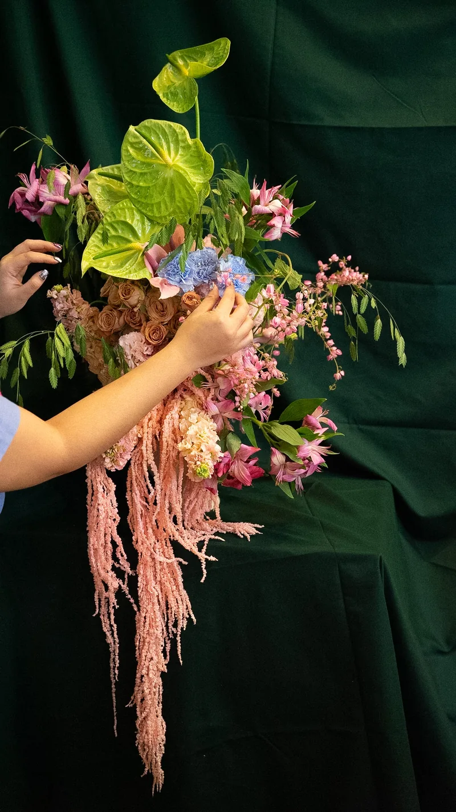
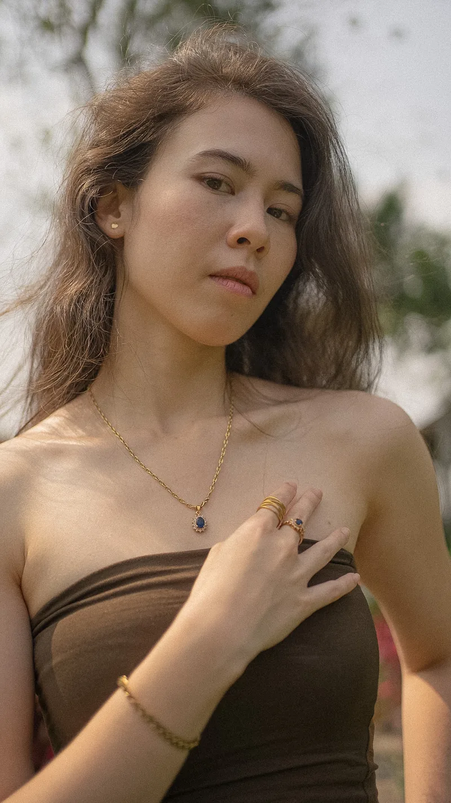
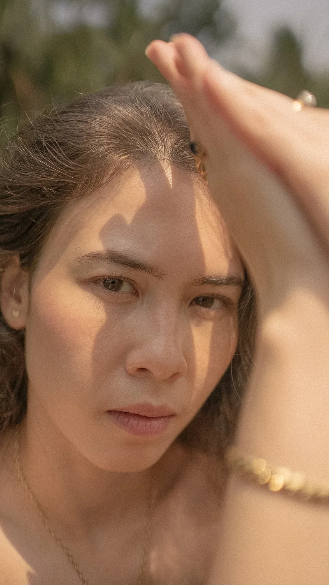

Padova
from €60
- 1-hour session
- 40 edited photos
- Preview within 48 hours
- One round of revisions, free
Portraits for couples, graduations and families, and photographs for brands, fashion and cafés. In Padova, Venice and nearby.
Sessions in Padova from €60 and in Venice from €100. Discounts for students and young couples.



Recent work. Select any photo to see it larger.





Affordable rates, with students and small businesses in mind. Write to me and we'll talk it through.
On graduation day or in a session a few days later, with the laurel wreath and the people who matter.
Couple, engagement and pre-wedding sessions in Padova and Venice.
Family portraits, outdoors or wherever you prefer.
Lookbooks, on-model photos, product details and social media content.
Dishes, drinks, interiors and the people who work there.
Clean photos for online shops, menus and catalogues.
Your dog, your cat, or the whole family together with them.
Have a different idea? I'm open to all kinds of collaboration. Ask for a quote
Starting prices for a 1-hour session.
from €60
from €100
Send me an enquiry for availability and a price that fits what you need.
Hi! I'm Alya Syifa, a female photographer from Jakarta. I now live in Padova, a short train ride from Venice.
I photograph couples, solo portraits, graduations and families. I also work with small brands on product photography, including fashion and jewellery, flower arrangements, and food and drink. And I photograph pets too.
I speak English and Bahasa Indonesia fluently.
I take a limited number of sessions each month, so each one gets my full attention. Write early to secure your date, and tell me the kind of session, the date and the place.